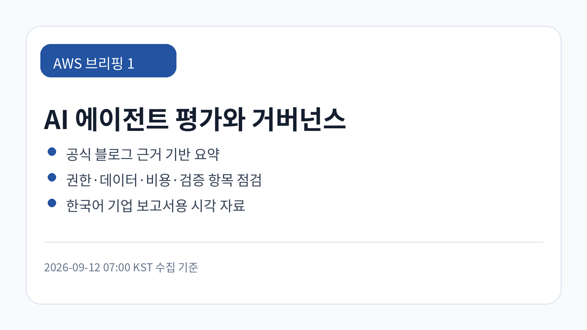
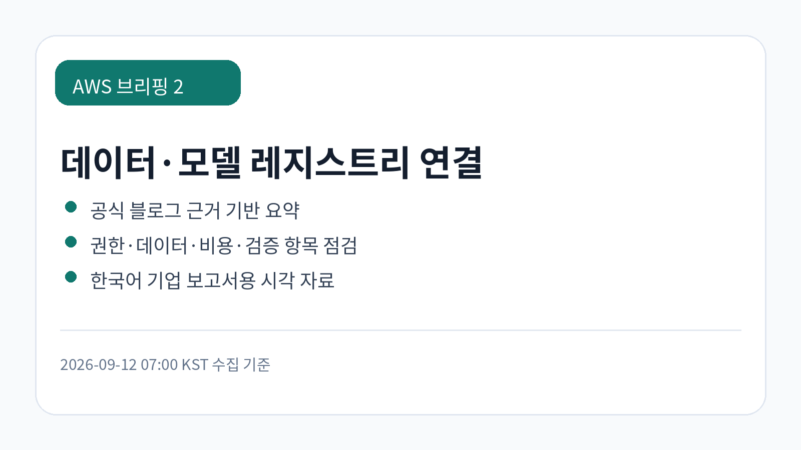
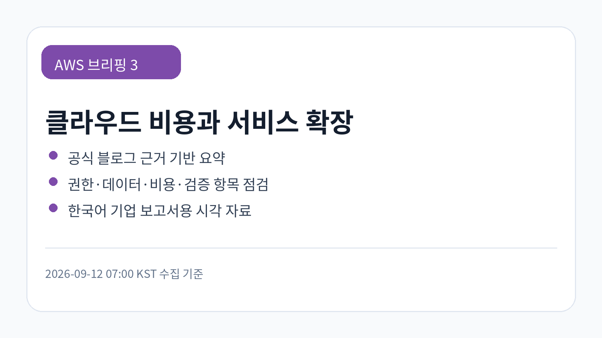

AvioBook의 Amazon Bedrock AgentCore 기반 항공 턴어라운드 인사이트 사례
AvioBook이 운영 데이터를 활용해 항공기 턴어라운드 인사이트를 생성하는 사례입니다. 현장 운영 데이터와 생성형 AI를 연결할 때는 데이터 신뢰도와 조치 책임 소재가 중요합니다.
검토 포인트: 항공·물류·현장 운영 조직은 AI 인사이트를 의사결정 보조로 활용할 수 있지만, 자동 조치 권한과 사람 검토 경계를 분리해야 합니다.
원문 보기공식 RSS 3개 확인 · 2026-09-12 07:00 KST
신규 원문을 raw 저장, LLM Wiki 동기화, GBrain 파일 저장 후 한국어 기업 보고서 톤으로 재구성했습니다.
이번 수집에서는 의료 유전체 파이프라인, 민감정보 탐지, 멀티턴 에이전트 평가, 항공 운영 인사이트, MCP 앱 구축이 함께 확인됐습니다. 공통 검토 축은 데이터 민감도, 도구 호출 권한, 평가 기준, 현장 운영 데이터의 신뢰성입니다.
AvioBook이 운영 데이터를 활용해 항공기 턴어라운드 인사이트를 생성하는 사례입니다. 현장 운영 데이터와 생성형 AI를 연결할 때는 데이터 신뢰도와 조치 책임 소재가 중요합니다.
검토 포인트: 항공·물류·현장 운영 조직은 AI 인사이트를 의사결정 보조로 활용할 수 있지만, 자동 조치 권한과 사람 검토 경계를 분리해야 합니다.
원문 보기AWS가 여러 턴의 대화를 평가하는 에이전트 지표를 소개했습니다. 단일 응답 품질이 아니라 대화 지속성, 목표 달성, 실패 처리까지 평가 범위를 넓히는 흐름입니다.
검토 포인트: 기업 에이전트 도입 시 테스트 데이터셋, 실패 기준, 배포 차단 조건을 사전에 정의해야 품질 리스크를 줄일 수 있습니다.
원문 보기AWS가 특정 모델에 묶이지 않는 LLM 기반 PII 탐지 방식을 다뤘습니다. 민감정보 탐지는 모델 선택보다 탐지 기준, 오탐·미탐 처리, 로그 보존 정책이 핵심입니다.
검토 포인트: 개인정보가 포함될 수 있는 문서·상담·업무 자동화에서는 탐지 결과의 정확도 검증과 예외 처리 절차를 의사결정 항목으로 포함해야 합니다.
원문 보기AWS HealthOmics를 활용한 임상 유전체 파이프라인 자동화 사례입니다. 연구·의료 데이터 처리에서는 워크플로 재현성, 개인정보·민감정보 통제, 파이프라인 운영 비용을 함께 확인해야 합니다.
검토 포인트: 임상·바이오 데이터 조직은 자동화로 분석 처리 시간을 줄일 기회를 검토할 수 있지만, 데이터 보존·접근권한·감사 추적 기준을 먼저 명확히 해야 합니다.
원문 보기AWS가 Amazon Bedrock AgentCore를 활용해 대화형 MCP 앱을 구성하는 방식을 소개했습니다. 도구 호출형 앱에서는 외부 시스템 권한, 세션 관리, 감사 로그가 핵심 통제 지점입니다.
검토 포인트: MCP 기반 앱을 검토하는 기업은 연결 가능한 도구 범위, 권한 위임 방식, 호출 실패 대응 기준을 아키텍처 검토에 포함해야 합니다.
원문 보기| 기사 | 게시 | 카테고리 |
|---|---|---|
| AvioBook의 Amazon Bedrock AgentCore 기반 항공 턴어라운드 인사이트 사례 | 2026-09-11 | AI/ML |
| 멀티턴 대화를 위한 에이전트 평가 지표 설계 | 2026-09-11 | AI/ML |
| LLM 기반 모델 비의존형 PII 탐지 패턴 | 2026-09-11 | AI/ML |
| 이노크라스의 AWS HealthOmics 기반 임상 유전체 파이프라인 운영 효율화 방안 | 2026-09-11 | Healthcare/Data |
| Amazon Bedrock AgentCore로 대화형 MCP 앱 구축 | 2026-09-12 | AI/ML |
AgentCore와 MCP 앱 사례는 생성형 AI가 단순 답변을 넘어 외부 도구와 운영 데이터를 연결하는 방향을 보여줍니다. PII 탐지와 멀티턴 평가 글은 이러한 연결이 확대될수록 보호 대상 데이터와 품질 기준을 먼저 정의해야 함을 시사합니다.
기업은 AI 앱, 의료·항공 운영 데이터, 민감정보 처리, 에이전트 평가를 같은 기준으로 묶어 판단하기보다 업무별 위험을 분리해야 합니다. 데이터 등급, 승인 절차, 감사 로그, 비용 추적 단위를 워크로드별로 정의하는 것이 안전합니다.
국내 기업은 개인정보·의료정보·운영 로그를 다루는 환경에서 AWS 사례를 참고할 수 있습니다. 다만 규제 준수, 데이터 위치, 접근권한, 외부 도구 호출 범위는 각 조직의 보안 기준에 맞춰 별도 확인이 필요합니다.
민감정보 탐지와 에이전트 평가는 오탐·미탐과 실패 기준을 명확히 해야 합니다. MCP 기반 앱과 운영 인사이트 사례는 도구 호출 권한, 사람 검토 단계, 장애 시 책임 소재를 설계하지 않으면 업무 리스크가 커질 수 있습니다.
관찰된 사실: AvioBook이 운영 데이터를 활용해 항공기 턴어라운드 인사이트를 생성하는 사례입니다. 현장 운영 데이터와 생성형 AI를 연결할 때는 데이터 신뢰도와 조치 책임 소재가 중요합니다.
기업 의사결정 시사점/리스크/기회: 항공·물류·현장 운영 조직은 AI 인사이트를 의사결정 보조로 활용할 수 있지만, 자동 조치 권한과 사람 검토 경계를 분리해야 합니다.
관찰된 사실: AWS가 여러 턴의 대화를 평가하는 에이전트 지표를 소개했습니다. 단일 응답 품질이 아니라 대화 지속성, 목표 달성, 실패 처리까지 평가 범위를 넓히는 흐름입니다.
근거 출처 URL: https://aws.amazon.com/blogs/machine-learning/agent-evaluation-metric-for-multi-turn-conversations/
기업 의사결정 시사점/리스크/기회: 기업 에이전트 도입 시 테스트 데이터셋, 실패 기준, 배포 차단 조건을 사전에 정의해야 품질 리스크를 줄일 수 있습니다.
관찰된 사실: AWS가 특정 모델에 묶이지 않는 LLM 기반 PII 탐지 방식을 다뤘습니다. 민감정보 탐지는 모델 선택보다 탐지 기준, 오탐·미탐 처리, 로그 보존 정책이 핵심입니다.
근거 출처 URL: https://aws.amazon.com/blogs/machine-learning/model-agnostic-pii-detection-with-llms/
기업 의사결정 시사점/리스크/기회: 개인정보가 포함될 수 있는 문서·상담·업무 자동화에서는 탐지 결과의 정확도 검증과 예외 처리 절차를 의사결정 항목으로 포함해야 합니다.
관찰된 사실: AWS HealthOmics를 활용한 임상 유전체 파이프라인 자동화 사례입니다. 연구·의료 데이터 처리에서는 워크플로 재현성, 개인정보·민감정보 통제, 파이프라인 운영 비용을 함께 확인해야 합니다.
근거 출처 URL: https://aws.amazon.com/ko/blogs/tech/healthomics-cancer-genomics-automation/
기업 의사결정 시사점/리스크/기회: 임상·바이오 데이터 조직은 자동화로 분석 처리 시간을 줄일 기회를 검토할 수 있지만, 데이터 보존·접근권한·감사 추적 기준을 먼저 명확히 해야 합니다.
관찰된 사실: AWS가 Amazon Bedrock AgentCore를 활용해 대화형 MCP 앱을 구성하는 방식을 소개했습니다. 도구 호출형 앱에서는 외부 시스템 권한, 세션 관리, 감사 로그가 핵심 통제 지점입니다.
기업 의사결정 시사점/리스크/기회: MCP 기반 앱을 검토하는 기업은 연결 가능한 도구 범위, 권한 위임 방식, 호출 실패 대응 기준을 아키텍처 검토에 포함해야 합니다.



Image Prompt 1: AWS 공식 블로그 신규 수집 현황을 한국어 기업 브리핑 스타일로 요약하는 카드형 시각 자료.
Image Prompt 2: 민감정보 탐지, 에이전트 평가, MCP 도구 호출을 한국어 도식으로 설명하는 시각 자료.
Image Prompt 3: 의료·항공 운영 데이터 활용 사례의 리스크 검토 항목을 한국어로 정리하는 시각 자료.